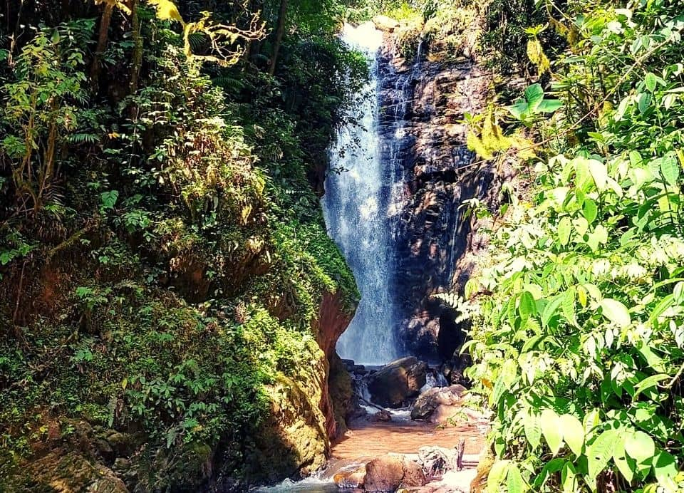
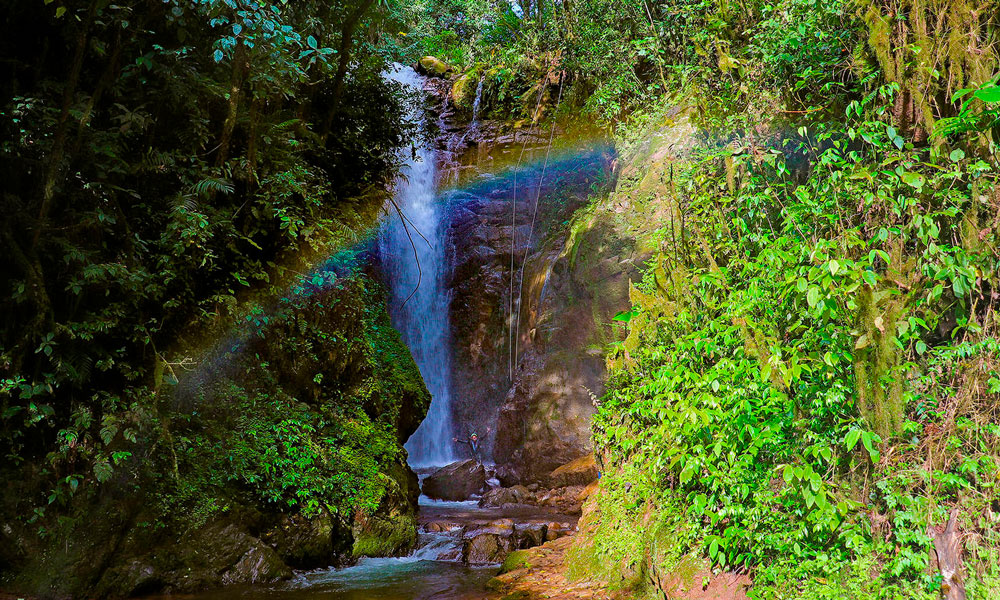
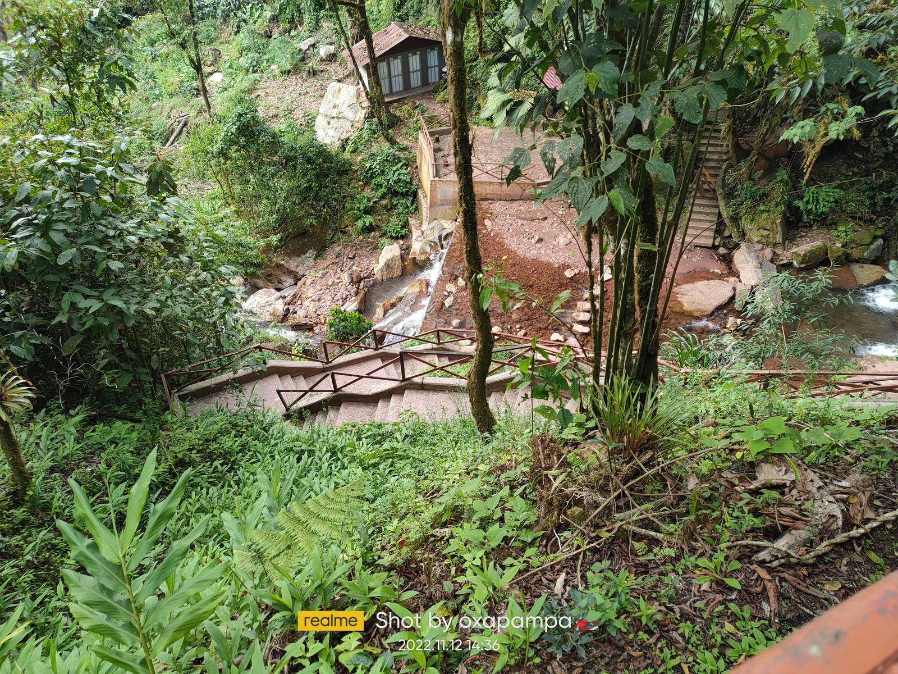

Playa Los Órganos: Un paraíso costero en el norte del Perú
Playa Los Órganos es un destino paradisíaco ubicado en la costa norte del Perú, conocido por sus aguas cristalinas, su arena dorada y su ambiente tranquilo. Es ideal para quienes buscan relajarse, practicar surf o disfrutar de un paseo en bote para avistar ballenas y tortugas marinas.
Historia
Los Órganos es un pequeño pueblo pesquero que ha crecido como un destino turístico en los últimos años. Su muelle artesanal, utilizado por los pescadores locales, también se ha convertido en un atractivo para los visitantes, ofreciendo una vista espectacular del océano y la oportunidad de ver tortugas marinas de cerca.



Horarios y Ubicación
- Ubicación: Playa Los Órganos, provincia de Talara, región de Piura, Perú.
- Horarios de visita: Acceso libre las 24 horas.
- Costo de entrada: Entrada gratuita.
Consejos para Visitantes
- Lleva agua y protector solar: El clima en el desierto es extremadamente caluroso y seco.
- Usa calzado cómodo: El acceso al Mirador implica caminar un poco por terreno arenoso.
- Visita temprano o al atardecer: Evita las horas de mayor calor y disfruta de una luz ideal para fotografías.
- Combina con otros atractivos: Puedes visitar el Mirador junto con el Cementerio de Chauchilla o el Museo María Reiche.
- Respeta las indicaciones: No salgas de las áreas permitidas para proteger las Líneas de Nazca.